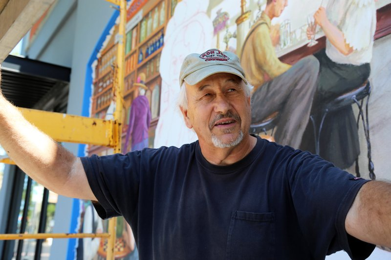

Main Street Mural

This is the final mural that Don Gray painted on the wall of Jazzy Bagel facing Main Street. The mural is a depiction of the Original Gresham Rexall Drug Store in the 1900's.
Christopher Keizur with the Gresham Outlook wrote a great article on the mural. Here is an excerpt:
“Gray had a lot of creative freedom when creating the mural and is grateful GOPA allowed him to come up with his own ideas for how it should look. During his extensive research, he decided he wanted to paint the history of the drug store, which served as a meeting place in the community.
"'It was a fascinating history,' Gray said, 'and I started envisioning what it would look like if you could open up the wall and see inside.'…
"'This young lady, in my mind, is the muse of the mural,' Gray said. 'I wanted her to be almost looking through you, looking forward to the future.'"
Read the full article at:
http://www.pamplinmedia.com/go/42-news/318940-198043-new-downtown-mural-invites-greshamites-to-share-stories
Artist: Don Gray
Here is a picture of Don working on the nearly finished project! Learn more about Don Gray at: DonGrayStudio.com